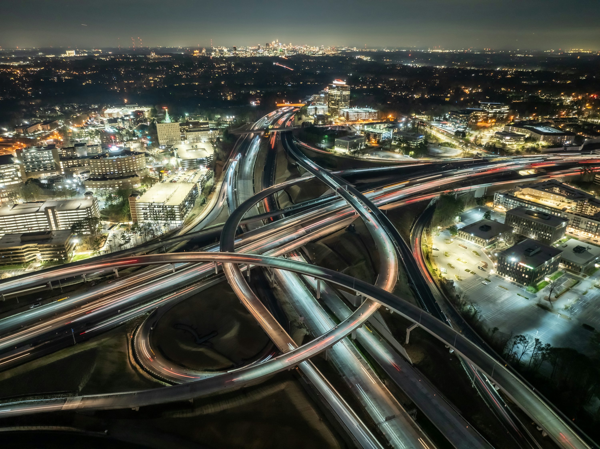
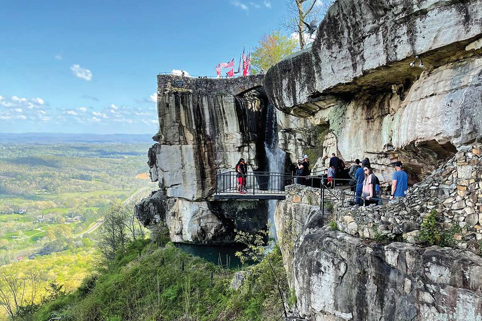
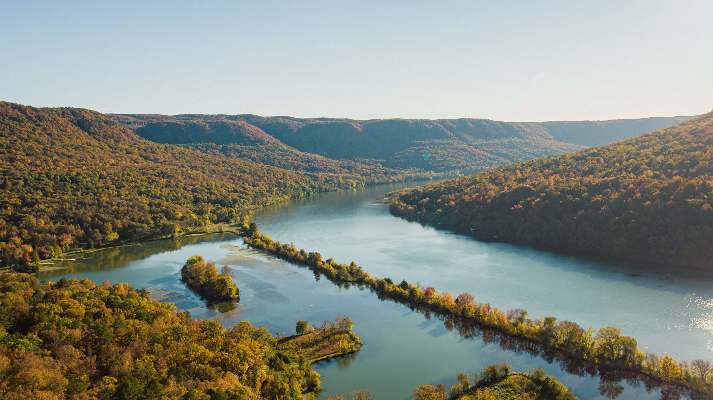
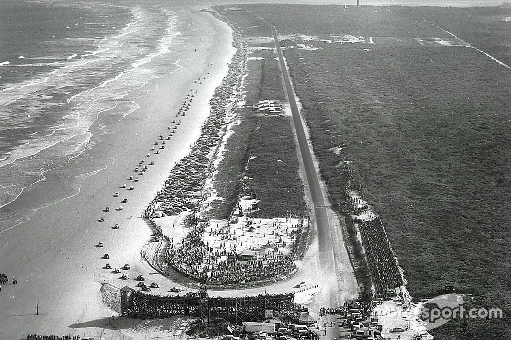
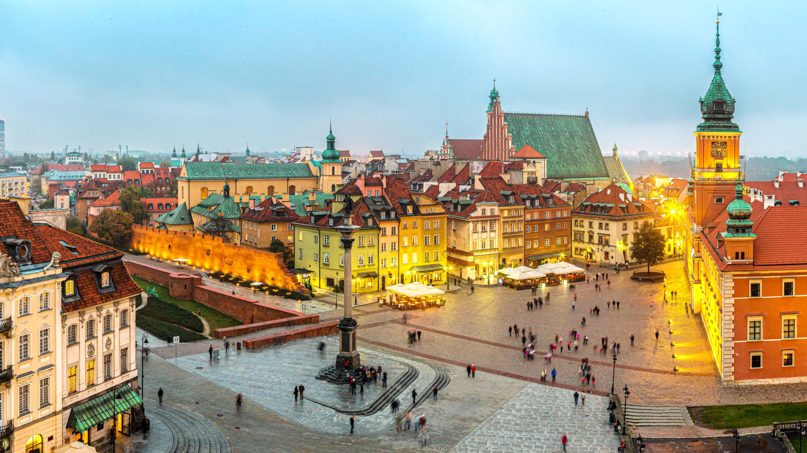
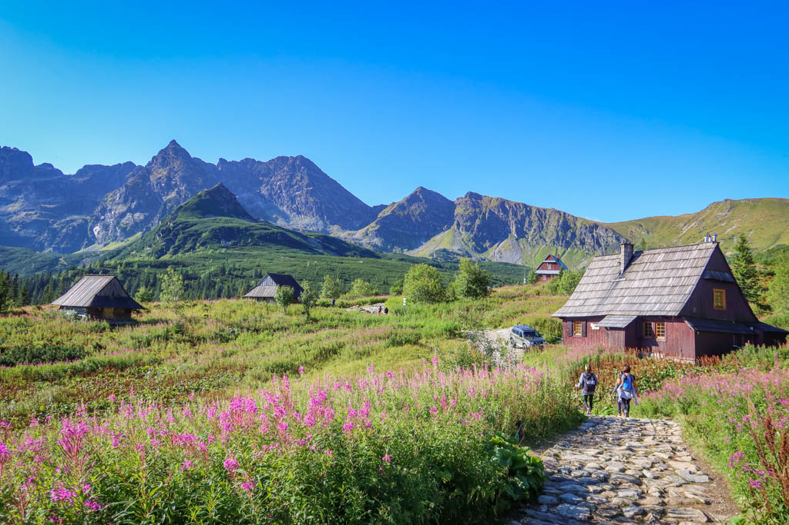

Travel & Adventure
Travel is a big part of my life. It lets me step into new cultures, try different foods, and see how people live in other parts of the world. Experiencing new places helps me grow, think differently, and appreciate the world beyond my routine.
I have traveled to many places, and every destination has its own atmosphere and memories. Atlanta feels like one of the biggest crossroads in the country, with highways and energy everywhere you go. Chattanooga offers a completely different experience with its mountains, bridges, and peaceful lakes. Daytona in Florida brings back great memories with its beaches and warm weather. Even with all of these experiences, my favorite place will always be Poland. It feels like home to me, and each visit reminds me of where I come from and the culture that shaped me.
Places I Visited

It's something beautiful to look at but horrible to be a part of during the day

Smoky mountains in Chattanooga has really beautiful views

During drive by or visiting has beautiful views on the waters

Till this day you can Drive on the Beach, It used to be a Nascar Speedway

Warsaw as a capital of Poland is very rich in history

Zakopane has some really beautiful views and trails to go hiking